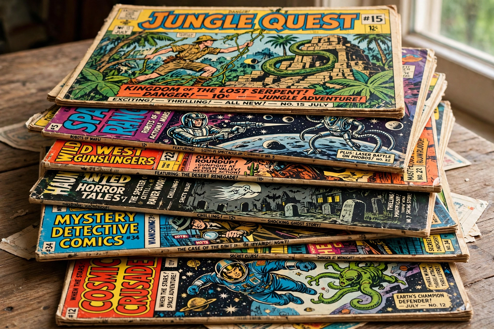

Comic book

A comic book is a publication consisting of comics art — sequential panels combining images and text, with dialogue presented in speech balloons and narration in captions. Although comic strips and picture stories predate it, the comic book as a distinct format emerged in the United States in the 1930s, when publishers began reprinting newspaper strips in magazine form and then commissioning original material.
History
Famous Funnies (1934) is often credited as the first modern American comic book. The publication of Action Comics #1 in 1938, featuring the debut of Superman, launched the superhero genre and the "Golden Age" of comics. The Second World War boosted sales; afterwards, horror and crime comics flourished until controversy over their alleged influence on juvenile delinquency — fuelled by Fredric Wertham's Seduction of the Innocent (1954) — led to Senate hearings and the industry's self-censorship code, the Comics Code Authority.
The "Silver Age" of the late 1950s and 1960s revived superheroes, notably at Marvel Comics under Stan Lee, Jack Kirby and Steve Ditko, with psychologically complex characters. Underground comix, the direct market of specialist shops, and the graphic novel format expanded the medium in the 1970s and 1980s; works such as Maus and Watchmen (both 1986) gained literary acclaim. In the digital era, webcomics have become a major channel of publication.
Formats and industry
Standard American comic books are periodical pamphlets of roughly 20–32 pages, collected later into trade paperbacks and graphic novels. Elsewhere, formats differ: Japanese manga are typically serialised in thick anthologies and collected in tankōbon volumes, while Franco-Belgian comics often appear as hardcover albums. The North American market is dominated by Marvel and DC Comics, though independent and creator-owned publishers have grown.
Storytelling
Theorists such as Scott McCloud, in Understanding Comics (1993), analyse comics as "sequential art" in which meaning arises in the gutter between panels through closure, the reader's inference of unseen action. The medium integrates word and image in combinations ranging from word-specific to purely visual sequences.